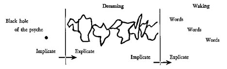

Published in Ullman on Dreams, Vol. 19, No. 2, May 1975, pp. 8-10, The American Academy of Psychoanalysis
Paper delivered at a Conference of Scientists with J. Krishnamurti at Brockwood Park, October 14, 1974.
I felt drawn to this theme as a consequence of three significant failures in my own life, which originally I thought were due to my own failings but were related to what I now think are the limitations of science, limitations that each of us in our own way are trying to talk about.
We start out in this world as more or less undifferentiated globs of protoplasm and our task appears to be to evolve into a human being having a place in a complex technological society. If we shift to a metaphorical mode we are up to our collective necks in deep water. To save ourselves from going under we reach out for support with only our right hand to grasp at what we think are a succession of solid structures. This is the master hand, the hand that enables us to master nature, to see the world as object and deal with the world objectively. This is the hand of science as science has come to be practiced. There is an awareness of the existence of a left hand and, on occasion, it flails about in the water. It is not seen as equal in strength and power to the right hand; rather it is seen in a somewhat negative light. It is labelled the "sinister" hand and is simply regarded as not being the right hand. Using only the right hand we do achieve a differentiated state, but one that never quite gets us out of the water, so that we continue to struggle atomistically against the forces tending to pull us under. Using both hands together in complementary fashion, however, would not only get us to that state of differentiation, but would also enable us to tackle the really important question of coming together on dry land in order to get on with the business of exploring and enjoying the universe. End of metaphor.
The use of both hands in getting us out of the water can still be called science, I suppose, but it would be quite a bit different from the science we now know. It would move from its preoccupation with nature as object to be mastered to a concern with what it is that has been mastered; and conversely, what it is that has been omitted, i.e., the sensuous aspects of man and nature and the price paid for this one-sidedness in human terms.
There have been various ways of noting this duality apart from the right brain, left brain dichotomy implied in the metaphor - the way of science vs. the way of mysticism, the categorizing vs. the contextual mode of information processing. Others speak of objective knowledge vs. sensuous knowledge, or the active mode vs. the receptive mode. The terminology I find most congenial is borrowed from the formulations of Andras Angyal, a psychiatrist who should be better known than he is. Angyal characterized the two essential trends in the human organism as the striving for autonomy, i.e., the self-organizing, self-enhancing, self-determining tendencies, and the striving for harmony, by which he meant the need to relate to and feel a part of a larger whole. The methods of objective science appear to have evolved in connection with the former, whereas our capacity for love and our aesthetic expression seem more related to the latter. My point is that science has paid too little attention to man's homonomous needs and there are too few psychoanalysts around to pick up the pieces.
The three areas of failure I referred to earlier are areas where the scientific method should presumably work, but where in my experience it falls somewhat short of the mark. In each instance my feeling is that the failure is traceable not to the flaws of the scientific method, but to the lack of an effective complementary approach.
Failure number one is the general field of psychiatry. I am a psychiatrist by profession. A significant transformation occurred in my life when I allowed myself the realization that psychiatry was not a part-time affair, that its practice was more of an art than a science and, as such, it demanded a total commitment and that the level at which one pursued it could not be divorced from the life style of its practitioners. I will not go into the evidence in support of this except to call your attention to several beginning trends in this direction, i.e., Laing's effort to provide a total environment at Kingsley Hall, Jones in his evolution of the therapeutic community at Dingleton Hospital and now, in the States among the young, a movement known as radical therapy.
Failure number two has to do with the longest, unsuccessful courtship in history - the near century old effort on the part of a handful of serious scientists and scholars of all kinds, interested in psychic phenomena, to woo the interest and acceptance of the scientific establishment so that the romance could be legitimized and ultimately consummated. While still in college I discovered that men like William Crookes, William James, Charles Richet, Oliver Lodge and Henri Bergson, to name a few, took a serious interest in what was then called psychical research. At that same time, add the fact that in the course of experimenting over a period of two years with some fellow students I came upon what I felt were rather remarkable and genuine paranormal phenomena, and you have what, for a young person, were the makings of a terrible dilemma. The result, of course, was that I felt impelled to build a special psychic closet in which to house this particular skeleton. Only in recent years, in response to a changing scientific ambience, have I gently opened the door. Someday it may be possible to transform the skeleton to a fullbodied creature, able to walk out of the closet by himself.
The final failure was linked to, perhaps, the most profound transformation of my professional life. It was my realization that Freud's theory of dreams was wrong. Lest this sound both immodest and disrespectful, let me hasten to add that his was a magnificent theory, richly presented, and it did call attention to the therapeutically useful features of dreams. Freud, in my opinion, in his determination to build a scientific psychology, approached dreams through the wrong mode. It was like trying to pick up a mixture of water and solids with a sieve. Much is lost in the process. Unfortunately, the very magnificence of Freud's work cast a long, paralyzing shadow on the subject for well over fifty years, although Jung and others did sense a little of the nature of the essence that was escaping Freud's container. Without going into details of an alternate theory of dreaming, let me emphasize that I regard dreams as creative and aesthetic experiences that depict in the form of visual metaphors the present state of our connections and disconnections with the world about us.
For some time I had been toying with the idea that what we experienced as a dream had an antecedent history in an event that was beyond time and space ordering, and came upon us in something approaching an instantaneous happening at critical moments in the transformation of one form of consciousness to another. The onset of the dreaming phase is one such critical modal point. The black dot at the left in the accompanying figure represents this event. It may be regarded as a kind of black hole of the psyche containing an enormously condensed information mass. Since this falls completely outside the realm of our ordinary information processing capacities, it is experienced as ineffable. We are forced to let it expand, as it were, or unfold and then deal with it in bits and pieces, ordered as best we can in time and space. These are the visual images that make up the dream as depicted by the various shapes in the figure. The information is still highly condensed, less so than formerly, and is spread out before us. A second transformation occurs when we reach the waking state. Here we try to transform this private experience into a public mode. This requires a further unfolding of the information contained in the images and the translation of this information into a public medium of exchange, namely language. Here is where we get into trouble because the information goes beyond what can be conveyed in a discursive mode. Much of the information is more readily felt than described. Moreover, the engagement with the information at a feeling level is an experiment in growth. That black hole contains within it our personal expanding universe and we do both ourselves and the universe an injustice when we try to reduce it to a play of instincts. Comments by David Bohm have both provided me with a language fitting to this process, namely, the successive transformation of implicate into explicate, as well as the more important sense of support from another domain, the world of physics, for what is simply an intuitive surmise on my part. What is implicate at one stage becomes explicate in the next stage through a process of unfolding, and what is explicate at this stage becomes implicate for the next stage.

If we use dreams simply as illustrative of a broader range of phenomena, unattended to or inadequately attended to by the present focus of scientific inquiry, then four general features of these phenomena emerge:
They are more readily appreciated than interpreted. Psychiatrists should have courses in dream appreciation rather than dream interpretation.
They share with all aesthetic experiences the quality of transcending space and time.
Their specific domain is the connective tissue between people, the underlying matrix of human existence, the sense of contact or contactlessness between people.
They are all in one way or another the creative embodiment of unpremeditated responses to novelty. Dreams provide us with perhaps our most familiar experience with this in the way our dreams capture appropriate, socially derived images to express subjective events.
What is the agency that provides this unending source of unerringly apt visual metaphors? I don't think we honestly know the answer to this question, but I do know how easy it is to gloss over our ignorance by attributing the whole works to some reified, internal demon, variously known as Primary Process, our Unconscious, or simply, our Id. Perhaps a prior question would be, what is the nature of the process involved in the selection and organization of the visual images with which we build the content of our dream consciousness? If we look at the process simply, i.e., without an allegiance to deeply embedded theoretical biases, we seem to be involved in a rather intriguing process. We seem to be able to bring together a selected array of bits and pieces of past social data that have become known to us over the course of our personal life history, and then to rearrange the data in a spatial and temporal ordering, bearing no relationship to their original time-space frame of reference, but one which enables them, through the personal transformation we have wrought, to rather precisely, dramatically and effectively express the particular interplay of feelings mobilized by a current unresolved life situation. Social reality makes a significant contribution to our dreams. It provides us with the very special kinds of building blocks it takes to capture and express one or another aspect of our subjective life. When you stop to think about it, it takes a rather high level of creative and organizational ability to tap our own internal computer for the appropriate bits with which to solve the puzzle and then to rearrange them in a way that makes sense as a kind of emotional template, highlighting a problematic aspect of our immediate experience. Having gone this far, we are almost forced to admit that the powers displayed by our dreaming selves far exceed the scope of our waking faculties. The comparison is, of course, unfair, since each is supreme in its own domain. One is not better than the other; each is a powerful way of grasping different aspects of our existence. Our problem is that we have paid more attention to the one than to the other. This view of our dream suggests that we are capable of looking quite deeply into the face of reality and of seeing mirrored in that face the most subtle and poignant features of our constant struggle to transcend our own personal, limited, self-contained, autonomous self so as to better be able to connect with and be part of a larger unity. Just as someone once remarked, our eyes may be regarded as the means nature created in order to see itself, in the same way our dreams may be viewed as an instrument created by society to see itself and its distortions reflected in one of its own creations. We cannot understand the level and range of creativity displayed in this manner as having its source in the individual alone. It has to be understood as a function of the individual and society. The dream comes about because, in the interest of reaching out toward this sense of unity, each of us has turned our psyche to an exquisitely sensitive pitch with a capacity to store and use what we have seen, heard and learned intuitively of the world about us, and function as a vehicle for expressing everything from passion to prejudice. The world endlessly nourishes and replenishes these creative juices, although for some of us they come out only at night, and for all of us they are far more discerningly honest at night.
The homonomous approach to knowledge, if identified and worked with, provides the self with enormously powerful tools with which to effect change and transformation. Any system, including a given personality system, becomes more than it conceives itself to be when, in fact, it is shown to be more on the exposure and identification of these connecting channels to a larger reality.
Copyright © 1975 Montague Ullman, All Rights Reserved.